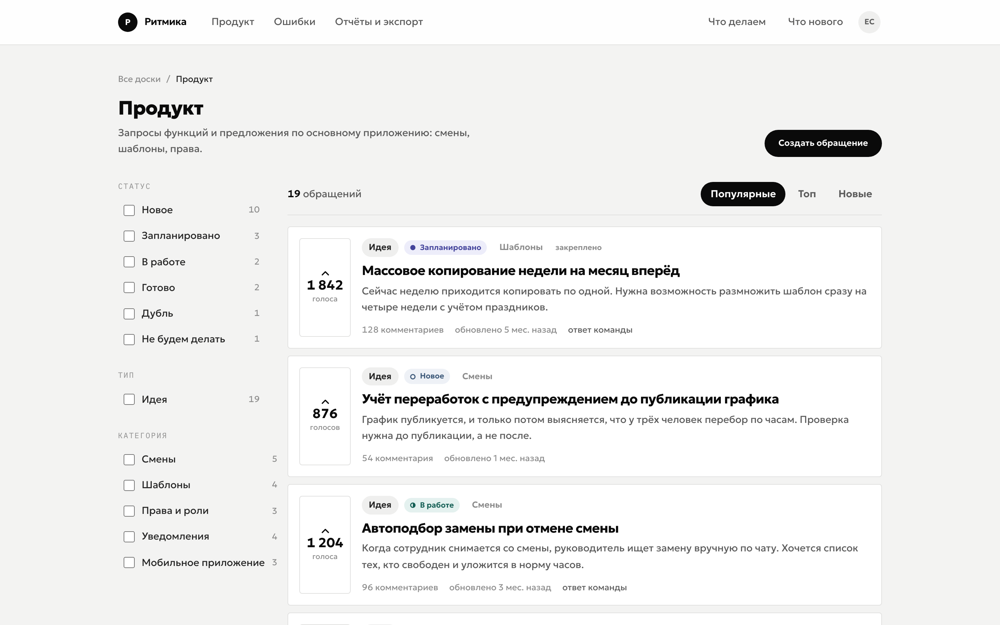
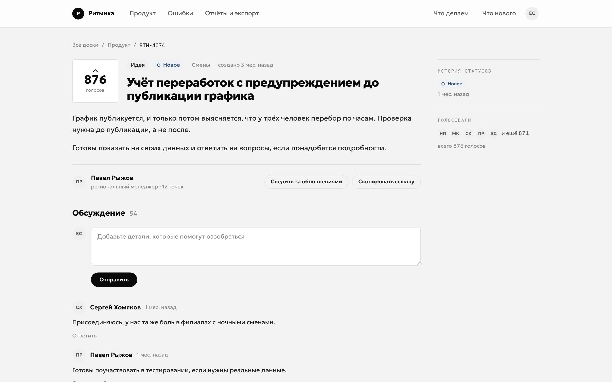
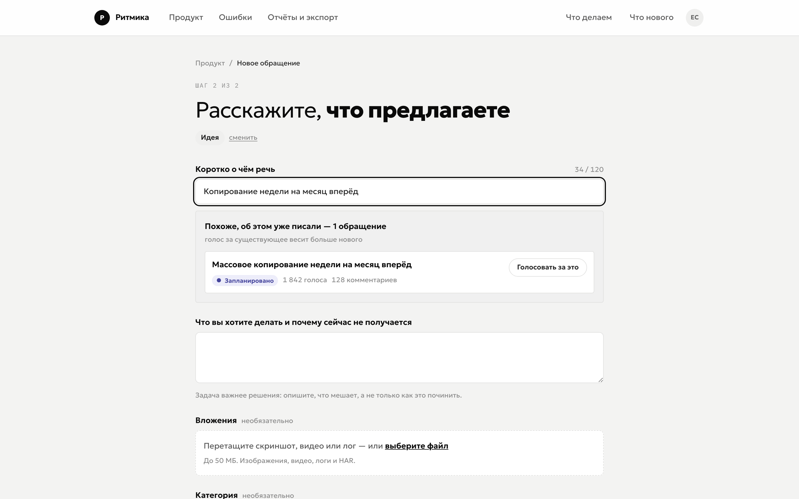
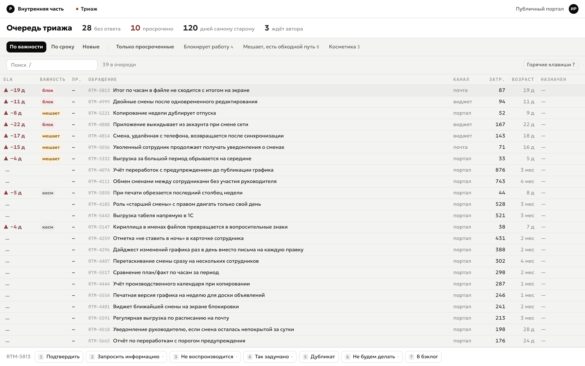
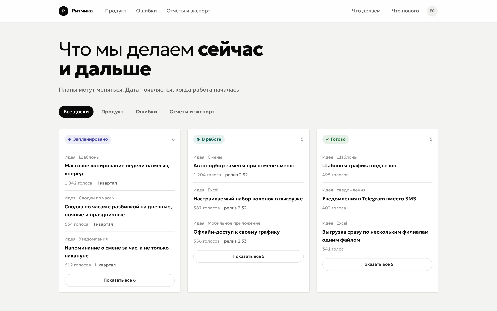

Typed submissions
The type drives the form, the statuses and the visibility: an idea has one set of fields, a bug adds steps, frequency, severity and environment.
An open-source feedback portal: feature requests and bug reports, triage, backlog, roadmap and changelog. One command on your server, then a wizard in the browser.
$ docker compose up -d
Next.js · PostgreSQL · self-hosted · one image for every product

How it works
Normally these are three separate systems and the link between them is lost: users never learn what happened to their request, and the team prioritises blind.
The type drives the form, the statuses and the visibility: an idea has one set of fields, a bug adds steps, frequency, severity and environment.
Confirm, ask for details, merge, decline. Every decision carries a reason, and the reason goes out by email.
Requests and work items are linked many-to-many. Priority is computed from reach, and tech debt competes for it on equal terms.
Work item closed public statuses updated email to everyone who voted roadmap and changelog
Screens
Screenshots are taken from the Russian-language demo instance: every UI string
lives in content/ and is translated per clone.
One user, one vote — guaranteed by a unique index rather than a check in code. A thread with team replies, a pinned update, status history and subscriptions.

While someone types a title, the portal surfaces similar requests with their votes and status and offers to vote instead of creating a new one. This is the main defence against a pile of duplicates.

Dense rows instead of cards: SLA, severity, channel, reach, age. Decisions are one keystroke away, overdue items read in shades of grey, and queue metrics sit in the header.

The roadmap collects requests from every board by status, and the changelog links back to them: publishing a release closes the requests and emails everyone who voted for them.

Features
Get started
One instance serves one product: its own database, its own domain, its own settings. The image is shared — a fork is only needed to change code.
docker compose up -d — database, portal, worker and a proxy
with a certificate.
FAQ
The public side and the triage queue are built and clickable, and the domain rules are real: trending, duplicate search, vote deduplication, SLA, rate limits. It all runs on Postgres: sign-in by email, real mutations, letters, attachments, triage, backlog and releases.
What is not there yet: backups out of the box, account deletion with anonymisation, and the in-app bug widget. All of it is in the plan and named honestly rather than hidden.
Canny collects ideas well, but it does not take bug reports and does not hold a backlog — that stays outside. Here all three loops share one model: a request is linked to a unit of work, and closing that work carries the status all the way back to users.
Plus self-hosting: what comes in with bug reports — screenshots, logs, personal data — never leaves your infrastructure, and the price is not charged per product you own.
No, and that is deliberate: there is no tenant_id in the
schema. Every product gets its own clone, database and domain. The cost
is updating N instances; the gain is a simple schema and complete
freedom to redesign.
A server with Docker and a domain. Everything else comes up with
docker compose up -d: PostgreSQL, the portal, the worker
and a proxy that issues the certificate itself. You will also need an
email channel — sign-in works by email — and S3 storage if you run more
than one copy of the app.
Completely. A redesign lives in three places:
theme/tokens.css, src/ui/ and
content/. Components never touch the database and know
nothing about it, so rewriting the markup cannot break a query.
By default a bug exposes only its title and status publicly; the description, attachments and auto-diagnostics are visible to the team only. Security reports are an isolated flow: never indexed, never part of any public query, and owners are the only ones notified.
Multi-tenancy and billing: this is a tool you run for yourself, not a SaaS you resell. An issue tracker — execution stays in Linear, Jira or ClickUp and syncs with the portal. Crash-report ingestion — that is Sentry. Anonymous voting — it breaks vote deduplication.
Next
The spec, data model, design brief and development plan all live in
docs/ — worth reading before the first clone.